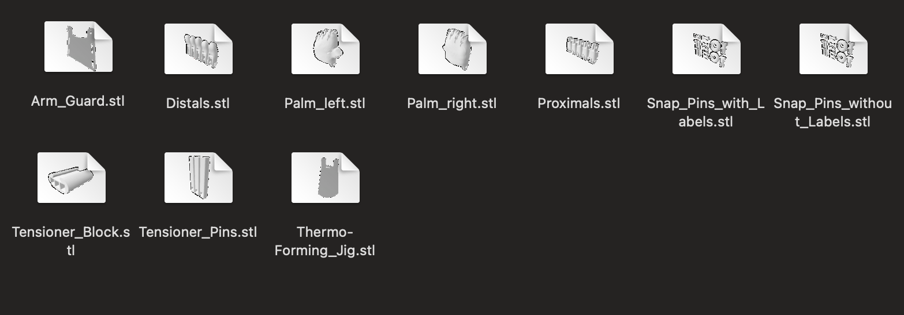
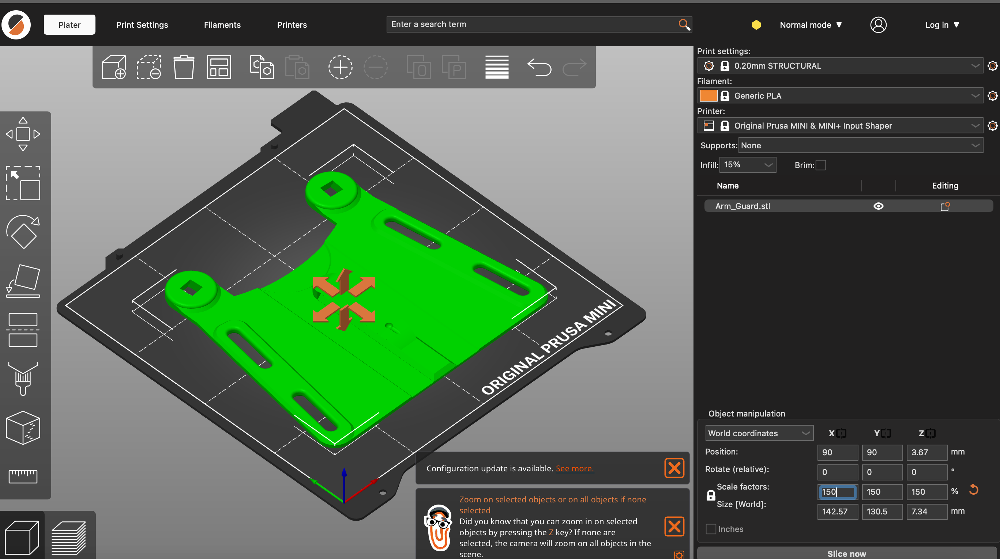
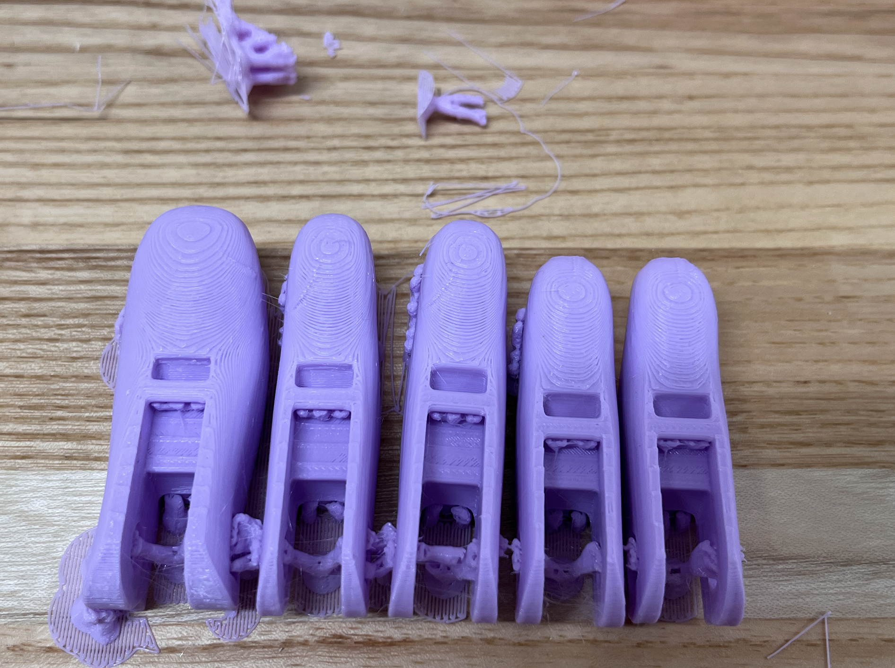
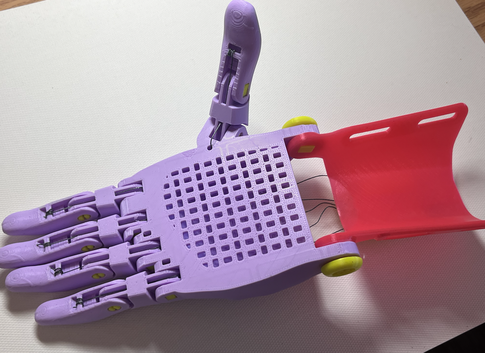

Process:
1. Register on the e-NABLE hub and review the resources there for the Phoenix Hand V3.
2. Browse and compare some other resourses of hand models.
3. Watch the assemply vedio.
4. Imported the files of different part of hand into Prusa Slicer. Scale each part to 150%.


5. Print.

6. Using the supplied parts kit from 3D Universe, assemble the device.

a vedio: